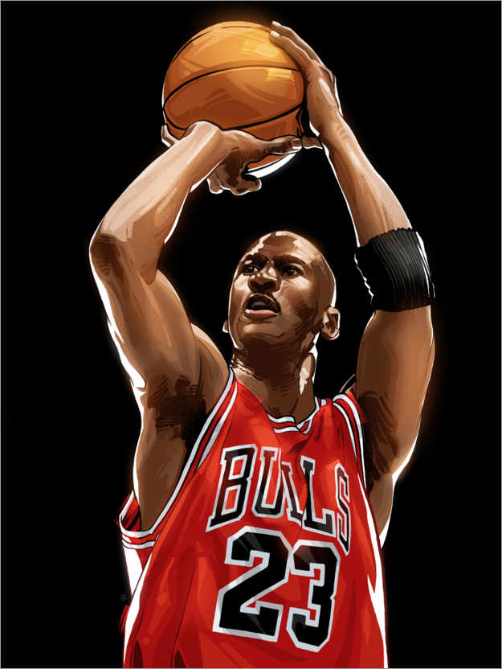

Personal Life
Premium Poster - Michael Jordan https://www.posterlounge.com/p/719375.html
{kind=link}
Michael Jeffrey Jordan was born at Cumberland Hospital in the Fort Greene neighborhood of New York City's Brooklyn borough on February 17, 1963,[14] the son of bank employee Deloris (née Peoples) and equipment supervisor James R. Jordan Sr.[14][15] In 1968, he moved with his family to Wilmington, North Carolina.[16] Jordan attended Emsley A. Laney High School in Wilmington, where he highlighted his athletic career by playing basketball, baseball, and football. He tried out for the varsity basketball team during his sophomore year; at 5'11" (1.80 m), he was deemed too short to play at that level. His taller friend Harvest Leroy Smith was the only sophomore to make the team.[17][18]
Motivated to prove his worth, Jordan became the star of Laney's junior varsity team, and tallied several 40-point games.[17] The following summer, he grew four inches (10 cm) and trained rigorously.[18] Upon earning a spot on the varsity roster, Jordan averaged more than 25 points per game (ppg) over his final two seasons of high school play.[19] As a senior, he was selected to play in the 1981 McDonald's All-American Game and scored 30 points,[20][21] after averaging 27 points,[19] 12 rebounds,[22][23] and 6 assists per game for the season.[23][24][25] Jordan was recruited by numerous college basketball programs, including Duke, North Carolina, South Carolina, Syracuse, and Virginia.[26] In 1981, he accepted a basketball scholarship to the University of North Carolina at Chapel Hill, where he majored in cultural geography.[27]
Source:
https://en.wikipedia.org/wiki/Michael_Jordan
College Career
As a freshman in coach Dean Smith's team-oriented system, Jordan was named ACC Freshman of the Year after he averaged 13.4 ppg on 53.4% shooting (field goal percentage).[28] He made the game-winning jump shot in the 1982 NCAA Championship game against Georgetown, which was led by future NBA rival Patrick Ewing.[29] Jordan later described this shot as the major turning point in his basketball career.[30][31] During his three seasons with the Tar Heels, he averaged 17.7 ppg on 54.0% shooting, and added 5.0 rpg.[32]
Jordan was selected by consensus to the NCAA All-American First Team in both his sophomore (1983) and junior (1984) seasons. After winning the Naismith and the Wooden College Player of the Year awards in 1984, Jordan left North Carolina one year before his scheduled graduation to enter the 1984 NBA draft. Jordan returned to North Carolina to complete his degree in 1986,[33] when he graduated with a Bachelor of Arts degree in geography.[34] In 2002, Jordan was named to the ACC 50th Anniversary men's basketball team honoring the 50 greatest players in ACC history.[35]
Source:
https://en.wikipedia.org/wiki/Michael_Jordan